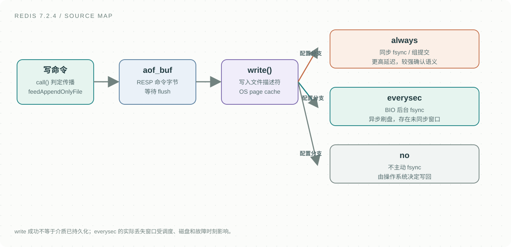
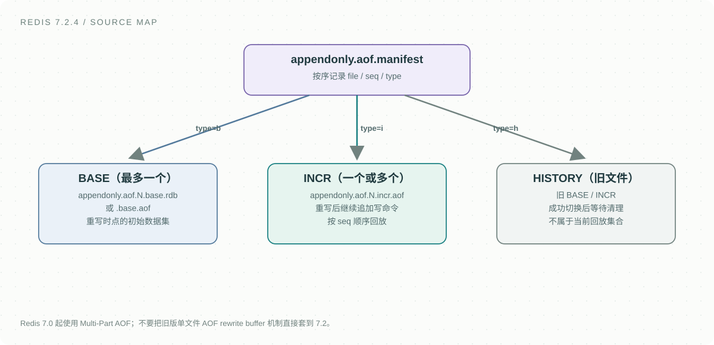
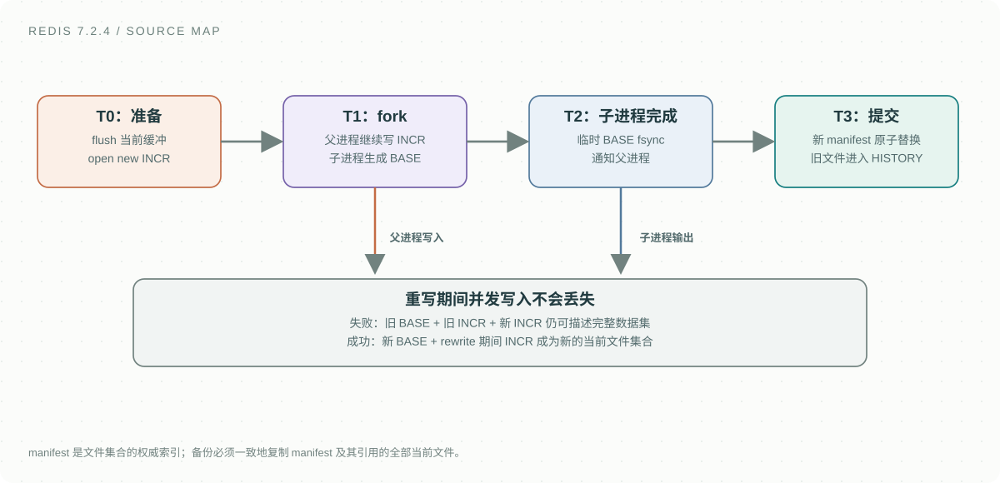

Chapter 18 / Redis 7.2.4 Source Anatomy
AOF 持久化：fsync 策略与 Multi-Part Rewrite
基于 Redis 7.2.4 aof.c 追踪 feedAppendOnlyFile、flushAppendOnlyFile、always/everysec/no，以及 BASE/INCR/HISTORY manifest 与原子重写。
AOF 记录写操作：它保存的是可重放命令流
Append Only File（AOF）把改变数据集的操作按 Redis 协议编码后追加到日志。与 RDB 的快照不同，AOF 以写命令序列重建数据状态。读取命令通常不会进入 AOF；实际是否传播由命令执行后的 dirty 差值、传播标志和命令实现决定。
Redis 7.2.4 中，命令传播到 AOF 时会进入 feedAppendOnlyFile()，并追加 RESP 命令字节到 server.aof_buf。切换数据库时，AOF 需要在命令流中写入 SELECT，确保重放时 key 落在正确 DB。AOF 不是对内存结构的逐字节 dump，也不是完整业务审计日志：rewrite 会把历史操作压缩成能重建当前状态的较短命令或快照。
从 aof_buf 到磁盘：write 和 fsync 不能混为一谈
flushAppendOnlyFile() 把 aof_buf 写入当前 INCR AOF 文件。成功的 write() 通常意味着字节进入内核页缓存，并不自动等于设备已持久化。fsync() / fdatasync() 才请求操作系统把相关数据同步到存储设备。
在 Redis 7.2.4，appendfsync everysec 会使用 BIO 后台线程执行 fsync；如果上一次后台 fsync 仍未结束，主线程可能延后本轮写入一小段时间。appendfsync always 则在写入路径同步 fsync；源码注释明确指出在此策略下 fsync 失败会使 Redis 退出，因为已回复给客户端的数据无法简单回滚。appendfsync no 不主动调用 fsync，写回时机交给操作系统。

| 配置 | Redis 7.2.4 行为 | 主要取舍 |
|---|---|---|
always | 每次 flush 尽量同步 fsync；可 group commit | 写确认更强，延迟和磁盘压力更高 |
everysec | 后台线程周期性 fsync | 吞吐较好，但存在尚未 fsync 的数据窗口 |
no | Redis 不主动 fsync | 性能受 OS 写回策略影响，持久化时点更不可控 |
不要把 everysec 描述为严格实时钟表：线程调度、磁盘队列、系统负载和故障时刻都会影响实际刷盘延迟。
交互为机制模型，不会连接 Redis 服务，也不构成性能或持久性保证。
Multi-Part AOF：BASE、INCR、HISTORY 与 manifest
Redis 7.0 起，AOF 不再只由一个不断增长的文件表达。Redis 7.2.4 使用 manifest 描述一组 AOF 文件：最多一个当前 BASE，后面可以有一个或多个 INCR；旧 BASE/INCR 在切换后成为 HISTORY，成功提交后再清理。

BASE 表示最近一次成功重写时点的数据初始状态。若 aof-use-rdb-preamble yes，BASE 可以是 .base.rdb，内容使用 RDB 格式；若关闭则生成 .base.aof 命令序列。INCR 文件则保存 BASE 时点之后的命令流，通常命名为 .incr.aof。manifest 是当前有效文件集合的索引，不应只备份其中一个文件。
这也修正一个常见版本误区：Multi-Part AOF 是 Redis 7.0 引入的，不是 Redis 8.x 才出现。旧版单 AOF rewrite 的内存 diff buffer 叙述不能直接套用到 7.2.4。
BGREWRITEAOF：父进程先开 INCR，子进程生成 BASE
rewriteAppendOnlyFileBackground() 在启动子进程前会 flush 当前缓冲并调用 openNewIncrAofForAppend()。当 AOF 已开启时，父进程打开一个新的 INCR 文件，从此之后的新写命令持续写入这个增量文件；随后通过 redisFork(CHILD_TYPE_AOF) 启动重写子进程，由子进程生成一个代表当前数据集的 BASE。

子进程成功退出后，backgroundRewriteDoneHandler() 创建临时 manifest，生成新的 BASE 文件名，将旧 BASE 和旧 INCR 标记为 HISTORY，并把新 INCR 文件纳入当前文件集合。完成临时文件准备后，Redis 持久化并原子替换 manifest，再异步清理不再需要的历史文件。
若 rewrite 失败，旧 BASE、旧 INCR 与重写期间打开的新 INCR 仍然能覆盖当前数据变化，因此不会因子进程失败而丢失这段写入。这种设计与 Redis 6 及更早版本的“父进程内存累积 rewrite diff，再在子进程结束时追加到新 AOF”不同。
启动回放与损坏处理：先备份，再检查，再修复
启动时 Redis 按 manifest 的当前文件集合加载 AOF：BASE 若是 RDB preamble，则先走 RDB 解码；之后按顺序回放 INCR AOF 命令流。回放命令经过内部 AOF loading context，某些正常运行时的命令统计、MONITOR 和传播行为会被抑制，避免把恢复过程误当成新的客户端流量。
如果文件尾只剩一条不完整命令，Redis 可依据 aof-load-truncated 配置决定是否截断不完整尾部并继续启动；中间出现无效字节则复杂得多，修复可能丢弃损坏位置之后的全部日志。redis-check-aof --fix 不是无损“修补器”，操作前应复制整个 AOF 目录及 manifest，并评估丢弃范围。
启用 AOF 与 RDB 时，启动通常优先使用 AOF；但 RDB 仍适合作为独立备份。不要把“有 AOF”理解为可以不做离线快照、异地复制和恢复演练。
实验：观察 manifest、BASE 与 INCR 文件
使用独立目录启动一个临时实例。执行几次写入后触发 BGREWRITEAOF，再观察 manifest 与目录中文件的变化。默认 appenddirname 通常为 appendonlydir，实验仍先通过 CONFIG GET 读取实际值。
tmp=$(mktemp -d)
mkdir -p "$tmp/data"
./src/redis-server --bind 127.0.0.1 --port 6390 \
--dir "$tmp/data" --appendonly yes \
--appendfsync everysec --save ""
./src/redis-cli -p 6390 SET aof:counter 1
./src/redis-cli -p 6390 INCR aof:counter
./src/redis-cli -p 6390 HSET aof:meta mode multipart
./src/redis-cli -p 6390 CONFIG GET appenddirname
./src/redis-cli -p 6390 BGREWRITEAOF
./src/redis-cli -p 6390 INFO persistence
# 等待 aof_rewrite_in_progress 变为 0 后：
find "$tmp/data" -maxdepth 2 -type f -print
cat "$tmp/data/appendonlydir/appendonly.aof.manifest"
./src/redis-cli -p 6390 SHUTDOWN
rm -rf "$tmp"实际 manifest 文件名以 CONFIG GET appenddirname 返回值为准；若 rewrite 尚未结束，不要提前删除临时文件或只复制 BASE。检查 AOF 时应先对副本运行 redis-check-aof，不要直接在唯一数据目录执行修复。
AOF 的保证边界：命令记录、刷盘与备份集合
AOF 的三个关键时点是：命令已执行并被传播、字节已 write 到操作系统、相关数据已 fsync。不同 fsync 策略在这几个时点之间提供不同保证。即使使用 always，磁盘控制器、电源保护和文件系统语义仍然是底层可靠性的一部分。
备份 Multi-Part AOF 时，需要复制 manifest 和它引用的完整当前文件集合；若在 rewrite 过程中盲目复制，可能得到 manifest 与文件版本不匹配的集合。Redis 官方文档建议备份时先避免 rewrite 并确认 INFO persistence 中没有 rewrite 运行。下一章转向内存生命周期：TTL 到期删除与 maxmemory 淘汰是两个独立的释放原因。
固定版本源码与参考
实现细节以 Redis 7.2.4 为准；官方最新文档用于核对概念与运维语义，不能反向替代版本锁定的源码证据。